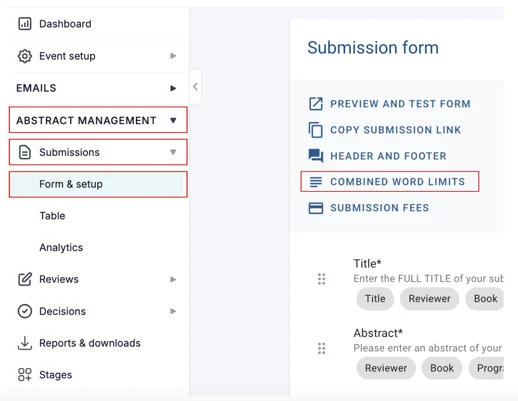
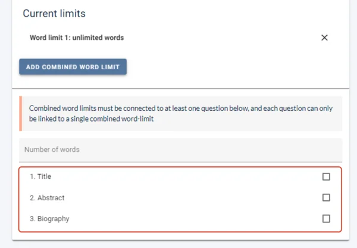
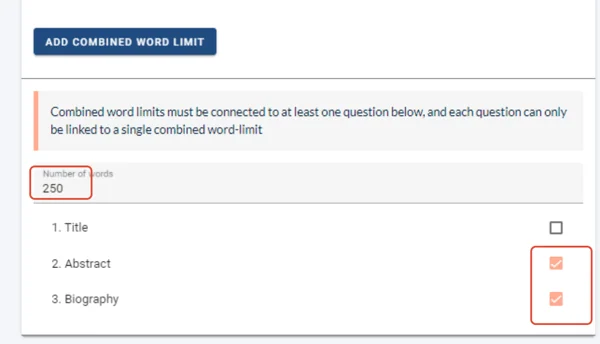
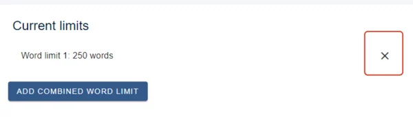

Combined word count
SubmissionsLast reviewed 28 July 2026
You can set a combined word count over multiple questions (short text and text editor questions). This works well for questions that work as separate elements of an abstract, e.g. background, objective, method, results, conclusions.#
#
The guidance below is for event administrators/ organisers. If you are an end user (eg. submitter, reviewer, delegate etc), please click here.
Go to Event dashboard → Abstract Management → Submission → Form & Setup →Combine Word Limits**.

All short text and text editor questions will be displayed.

Enter a word limit and choose which questions you would like the word limit to apply to.

Removing a Combined Word Count
To remove a combined word count, click the x alongside the relevant one under Current limits.


Did this page solve it?
Thanks — this helps us fix it.
Didn't solve it? Ask our support team
No question is too small, and there's no charge for asking. Raise a ticket and someone who knows the software will pick it up.